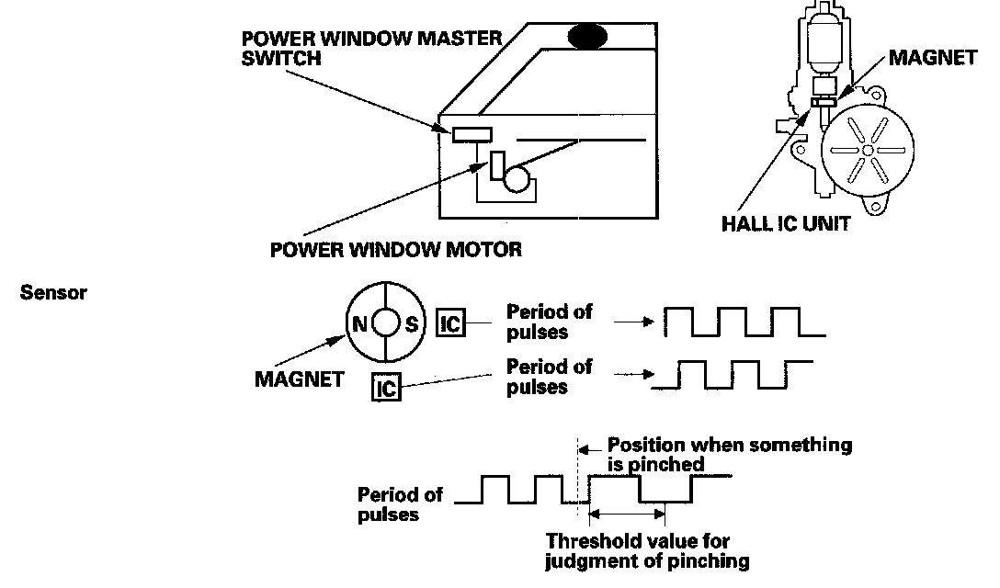

System Description
Power WindowsSystem Description
Anti-pinch Power Window Operation
The system is composed of the driver's MPCS unit, passenger's MPCS unit, power window master switch, passenger's switches, and power window motors.

The power window motor incorporates a pulser which generates pulses during the motor's operation and sends pulses to the driver's and passenger's MPCS units. As soon as the power window control unit detects a change in the pulse frequency from the pulser, the power window control unit makes the power window motor stop and reverse. This is prevent pinching your hand or fingers during auto-up operation.
Key Cylinder Operation
With the key inserted in the driver's door key cylinder, turn the key a second time within 15 seconds and hold it to operate the windows and moonroof (clockwise to open, counterclockwise to close). The windows and moonroof stop moving when the key is released. The anti-pinch operation is not active when closing the windows and moonroof with the key cylinder.
Keyless Operation
By pressing and holding the UNLOCK button of the keyless transmitter a second time within 15 seconds, the windows and moonroof open. The windows and moonroof stop moving when the UNLOCK button is released. The windows do not close with the LOCK button.